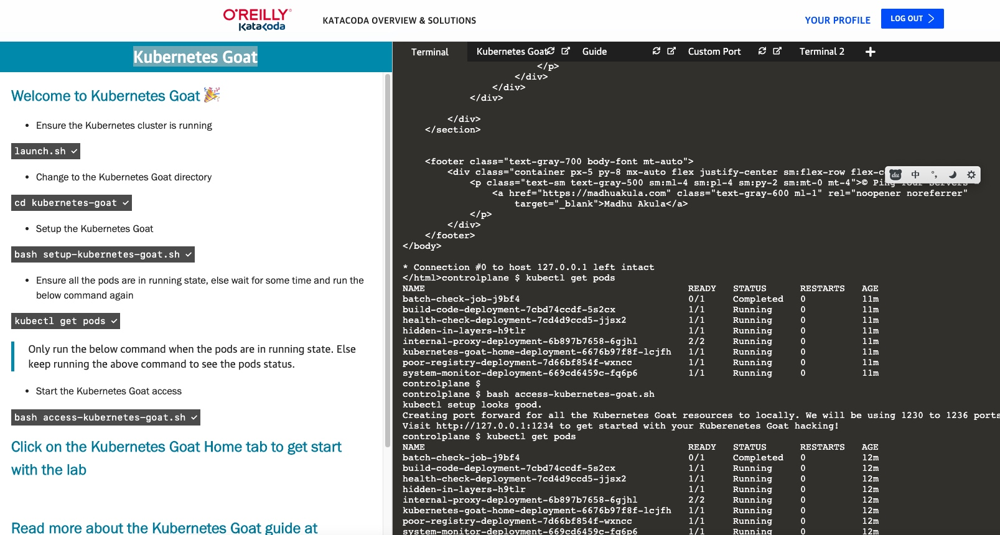
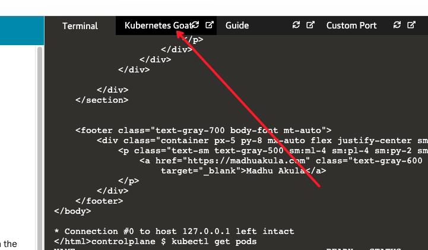
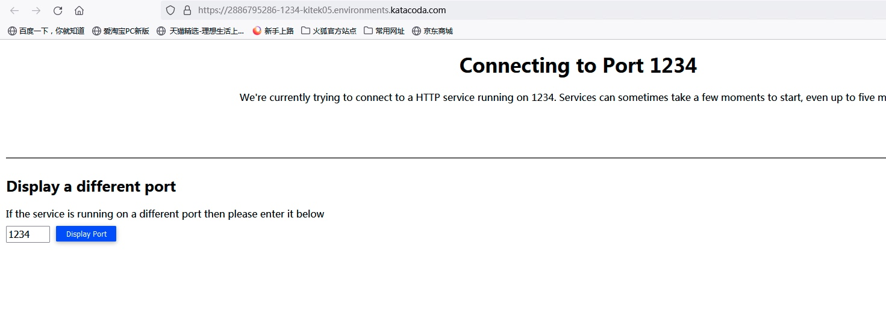
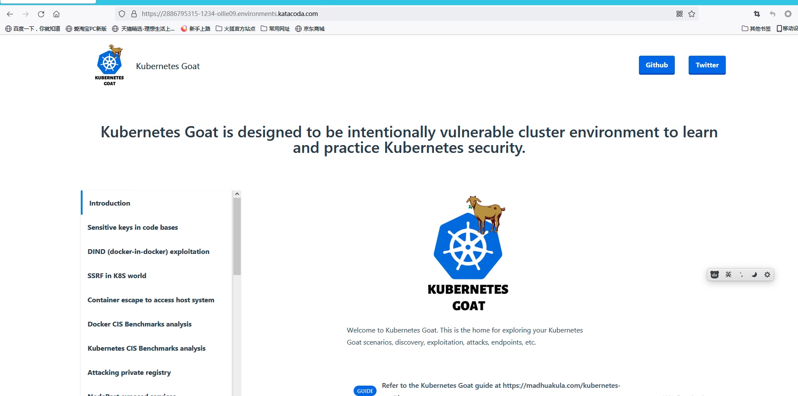
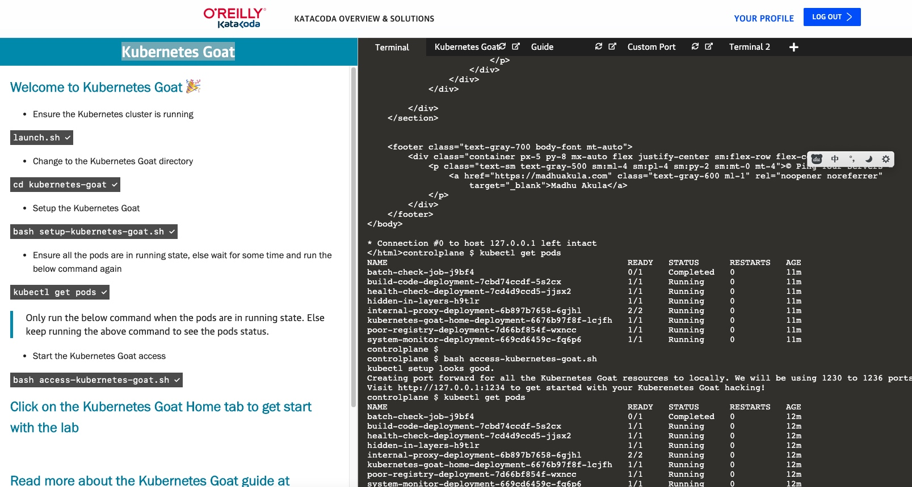
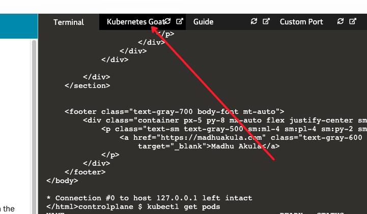
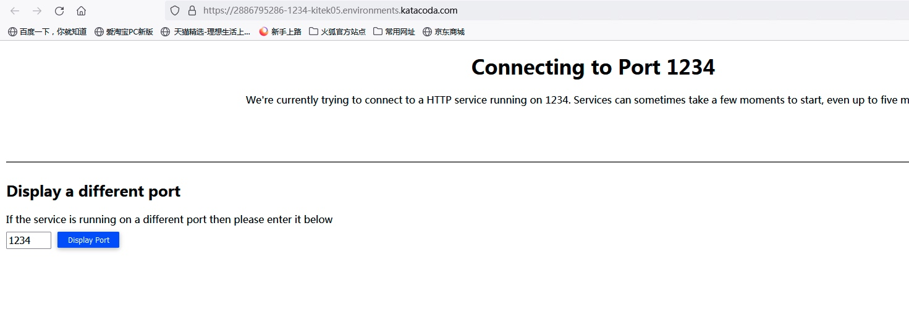
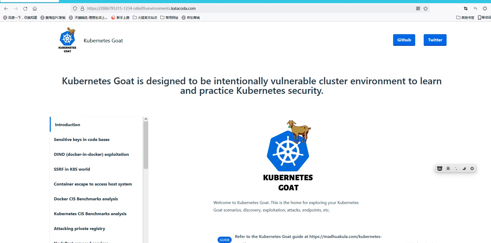

Kubernetes goat 靶场学习
Kubernetes Goat 靶场学习
启动靶场
https://katacoda.com/madhuakula/scenarios/kubernetes-goat  kubectl get pods,等所有容器running之后，在运行下面一条命令。然后打开：
 点击 Display  等待一会即可出现如下： 
https://katacoda.com/madhuakula/scenarios/kubernetes-goat  kubectl get pods,等所有容器running之后，在运行下面一条命令。然后打开：
 点击 Display  等待一会即可出现如下： 